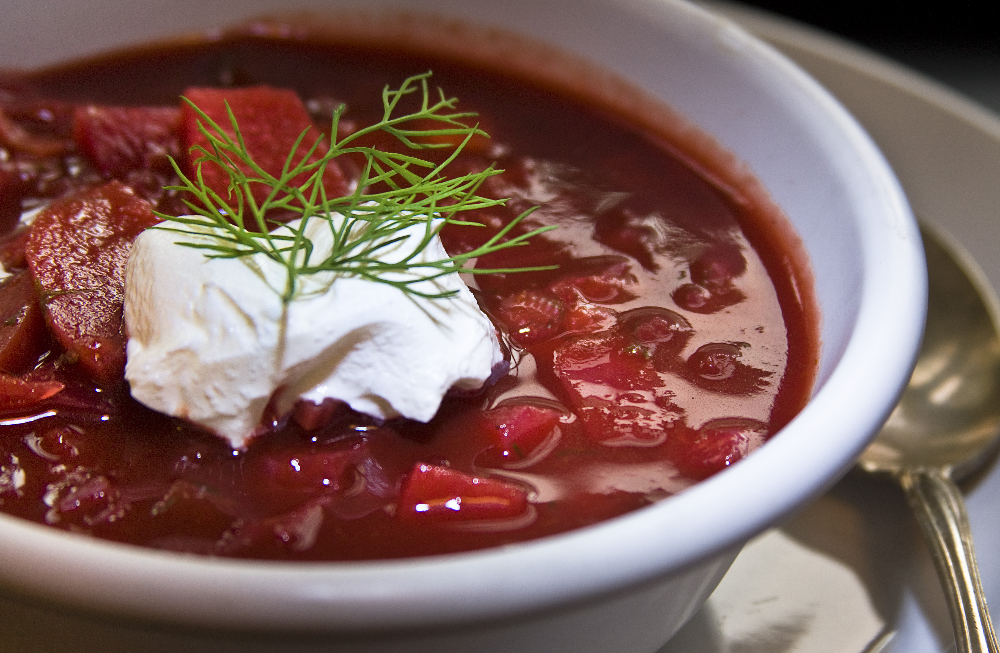
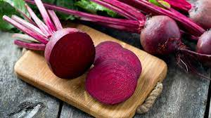
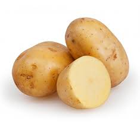

The dish I will be discussing: Borscht
Borscht is one of the most recognizasble dishes in Ukraine. Borscht is a beet soup
that contains many other ingredients such as cabbage, potato, onion, carrot, and the icing on
the cake, sour cream. Sour cream is a MUST for borscht and if you do not include it in your soup when sitting
with a bunch of Ukrainians, you will be deemed as weird. Borscht has a very unique palette, it is sweet and sour,
and the addition of the sour cream makes the broth more creamy. Salt and sugar are commonly used, my favorite is
also including some spice, so I typically put Sriracha sauce in mine to give it a kick.
| Name of the Key Ingredient | Percentage Per Serving (%) | Raw Ingredient or Material |
|---|---|---|
| Water | 70% | |
| Beets | 20% |  |
| Potato | 10% |  |